🏢
Identity infrastructure
Configured a Windows Server domain controller and domain-joined Windows endpoint to explore users, authentication and domain services.
A practical home lab combining Windows Active Directory, endpoint telemetry, Splunk SIEM and controlled security testing to explore authentication monitoring, event investigation and detection workflows.
The objective was to understand how a Windows domain environment generates security events, how endpoint logs reach a SIEM, and how analysts can investigate suspicious activity using collected telemetry.
Configured a Windows Server domain controller and domain-joined Windows endpoint to explore users, authentication and domain services.
Set up Splunk Enterprise and Universal Forwarders to collect Windows telemetry for centralised searching and investigation.
Explored RDP authentication testing and selected Atomic Red Team simulations, then examined the telemetry available for analysis.
The environment uses separate virtual machines on an isolated lab network. The diagram below documents the intended topology.

Network Flow Diagram — stored in the repository's screenshots folder.
Infrastructure, monitoring, testing and documentation tools.
VirtualBox, Windows Server 2022, Windows 10 Pro, Ubuntu and Kali Linux.
Splunk Enterprise, Splunk Universal Forwarder, Sysmon and Olaf Hartong's Sysmon configuration.
Hydra, Crowbar, FreeRDP and Atomic Red Team for controlled testing in the lab.
Windows Security logs can help distinguish successful logons from failed authentication attempts. These event IDs were part of the investigation workflow in this lab.
Review the account, logon type, timestamp, workstation and available source network information to understand a logon event.
Examine repeated failures, account names, failure reasons and source information to assess whether activity warrants further investigation.
A useful security test checks both whether an action ran and whether the expected evidence was collected. The outcomes below reflect the observations recorded during this project.
Used Hydra and Crowbar to explore failed RDP authentication attempts in the lab. Crowbar did not establish the expected successful session, so FreeRDP was used to establish a successful RDP session separately.
Executed the selected Atomic Red Team PowerShell test in the lab and observed PowerShell-related telemetry in Splunk.
Attempted the selected local-account creation test. The expected account-creation telemetry was not visible in Splunk during the investigation, leaving a detection and data-collection gap to resolve.
Selected screenshots from the project repository. Select an image to view it larger. All images are loaded from GitHub.
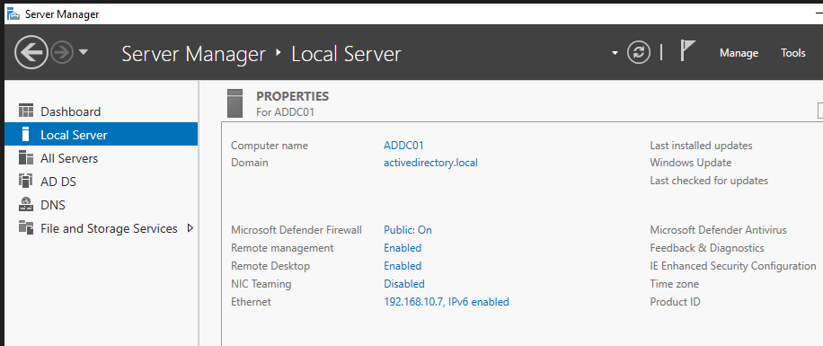
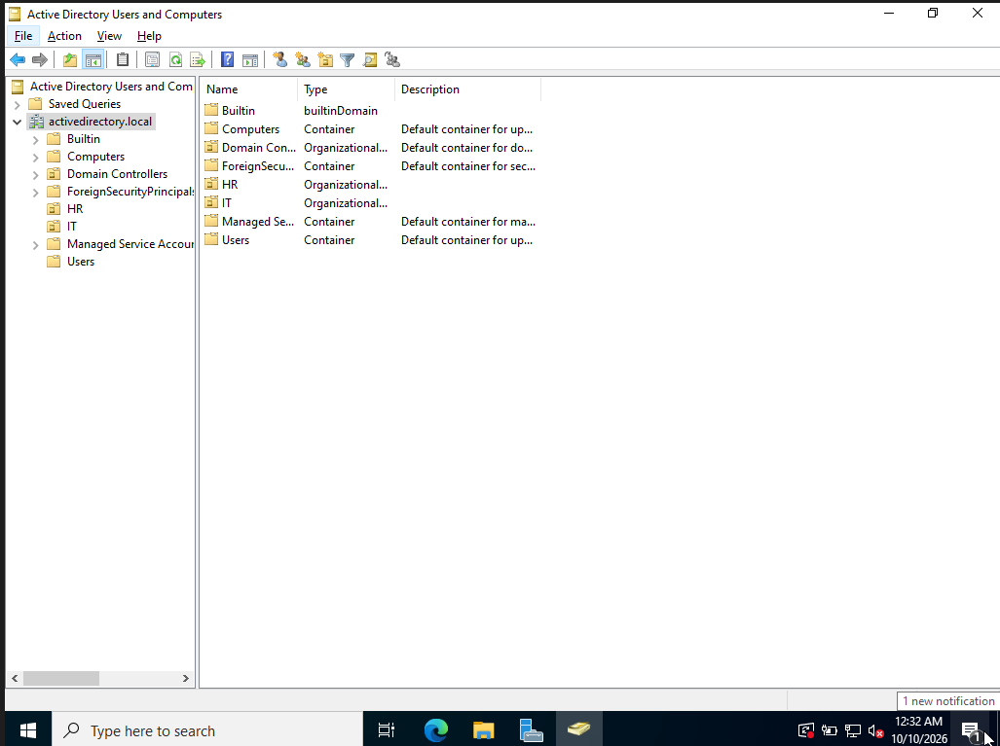
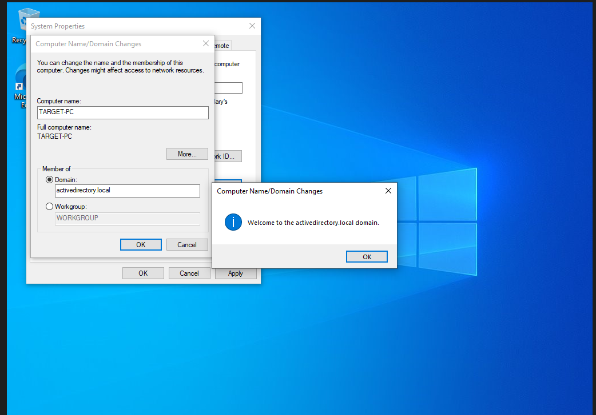
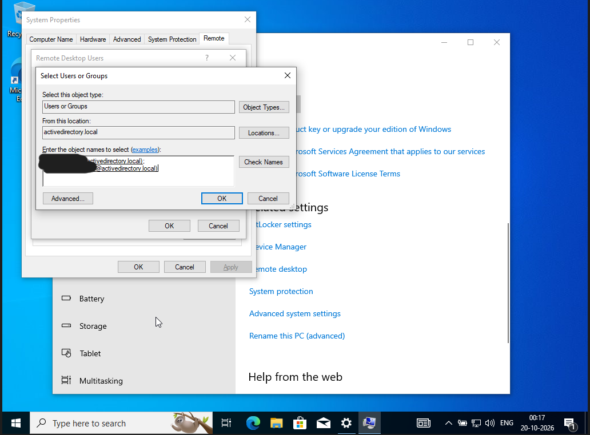
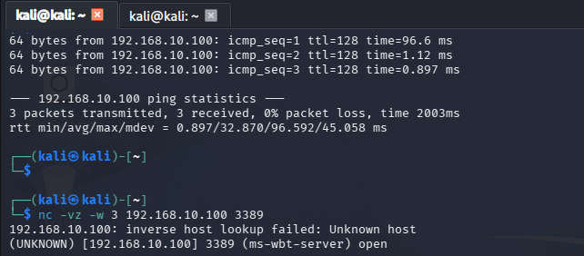
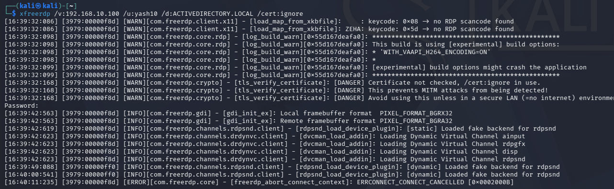
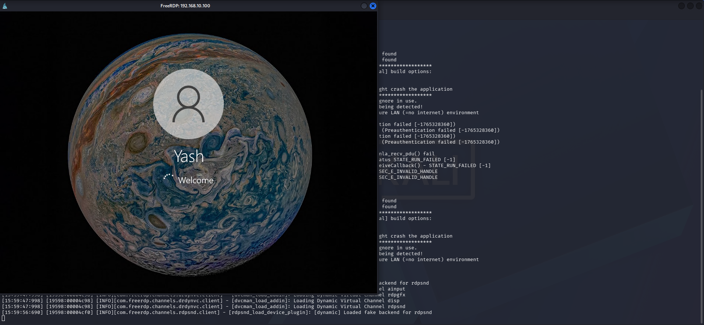
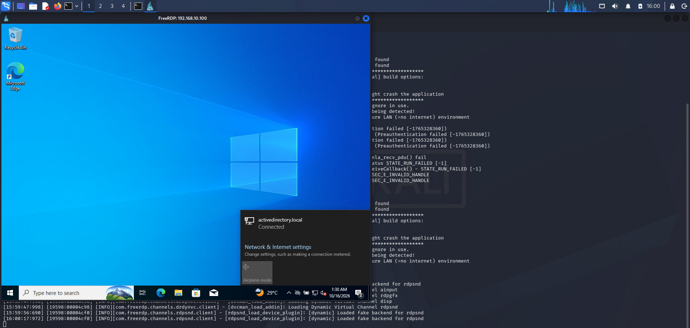
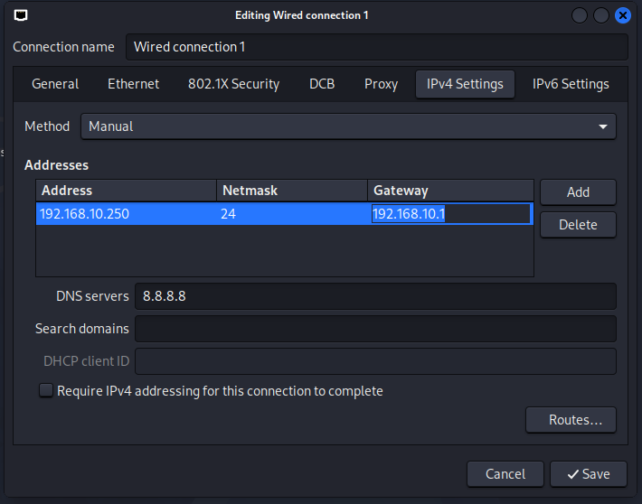
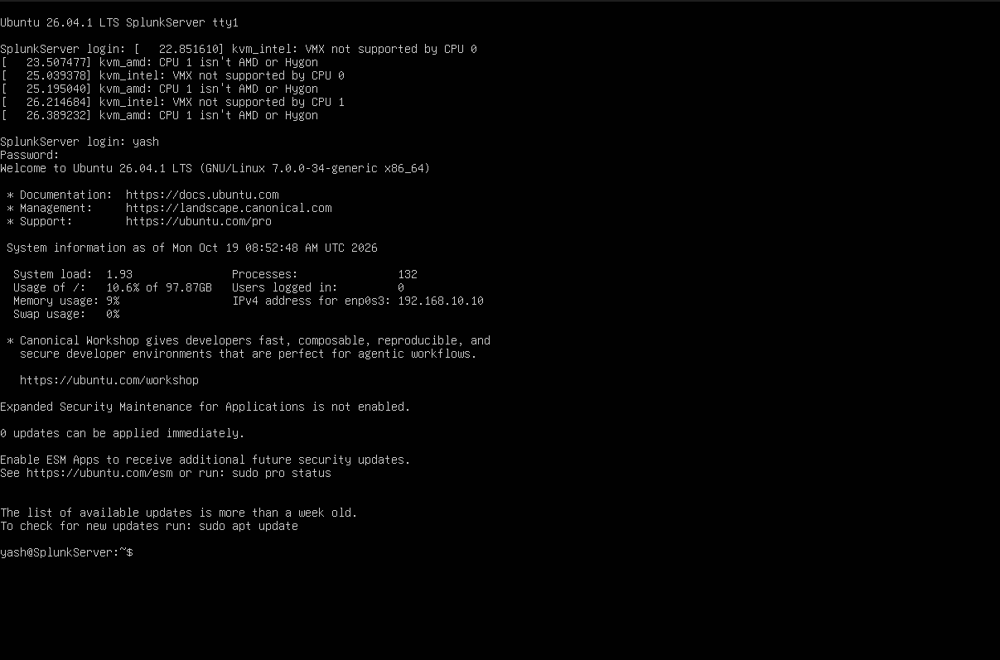
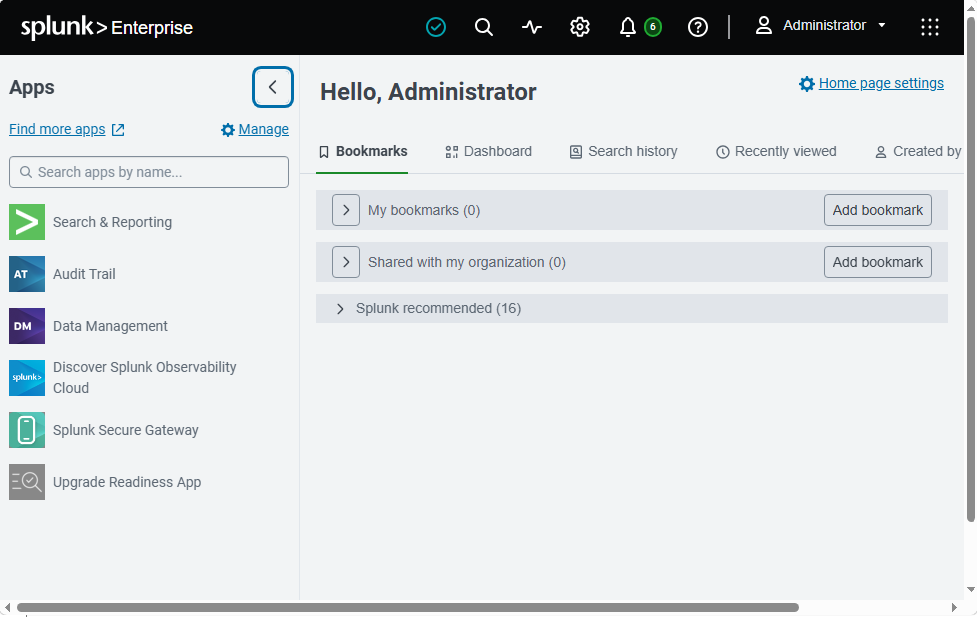
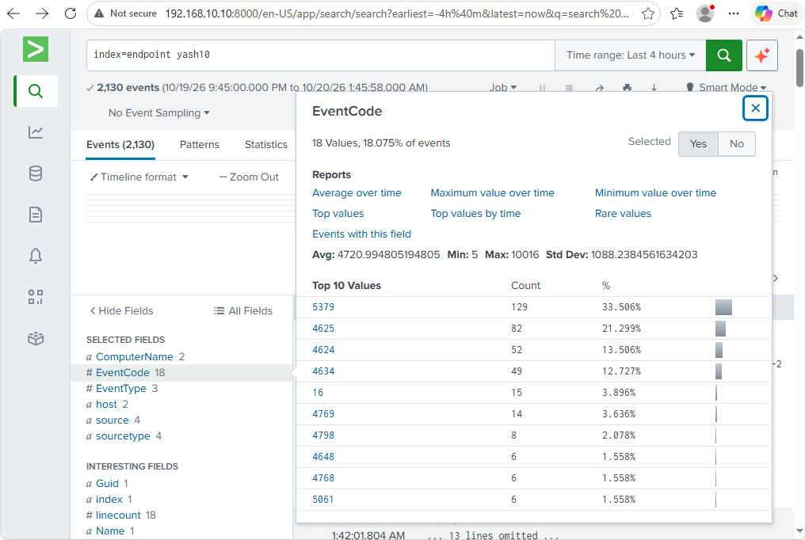
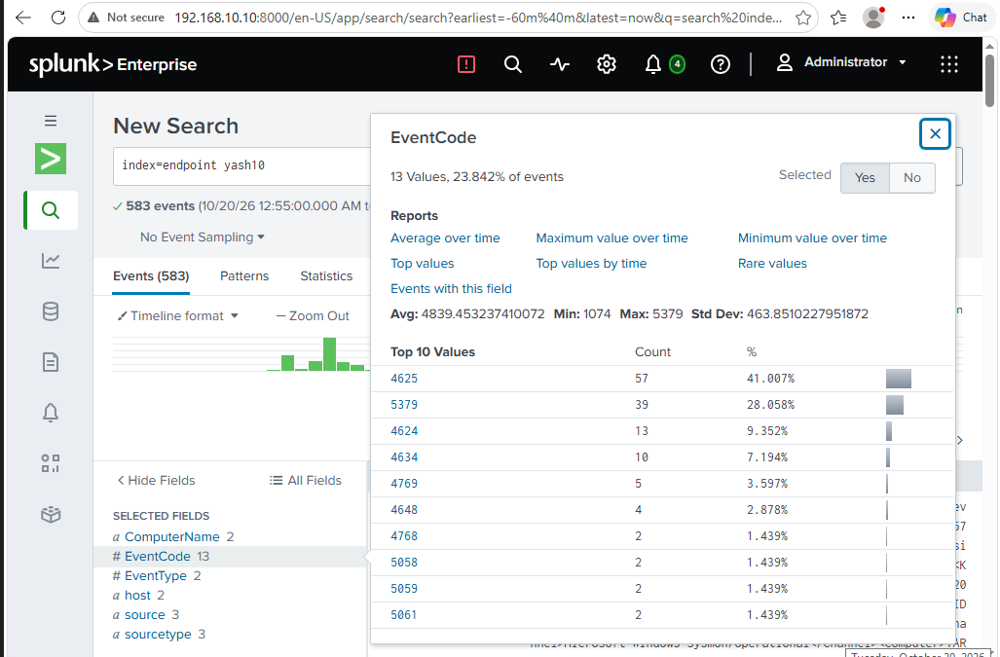
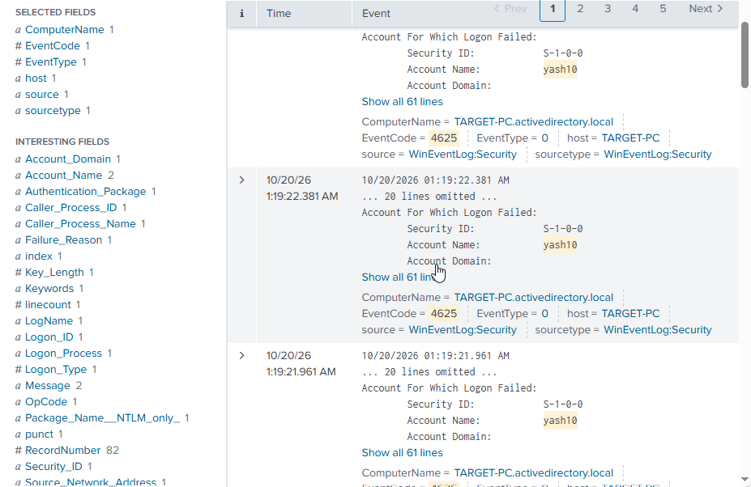
Screenshot descriptions are intentionally general. The images themselves provide the underlying evidence.
Building and troubleshooting the environment was part of the learning process, especially when expected telemetry did not appear.
Running multiple operating systems required careful allocation of disk space and memory. A stable lab depends on balancing resources across the host and guest machines.
Domain joining required a compatible Windows edition and correct network and DNS configuration. Connectivity problems need to be separated from authentication problems.
Different testing clients did not behave identically. A failed connection attempt must be distinguished from a confirmed authentication failure in the logs.
Executing a test is only one part of a detection workflow. The next steps are to verify audit policy, event sources, forwarding, ingestion, timestamps and the actual fields indexed by Splunk.
This project was developed as a hands-on learning exercise, supported by public learning resources and community tooling.
Learning resource and inspiration for building and understanding Active Directory security lab environments.
Practical learning resources around security monitoring, detection engineering and hands-on lab building.
The lab also used Sysmon configuration resources and Atomic Red Team tests. Refer to each project's own documentation and license.
Visit the repository for project documentation, screenshots and implementation notes.